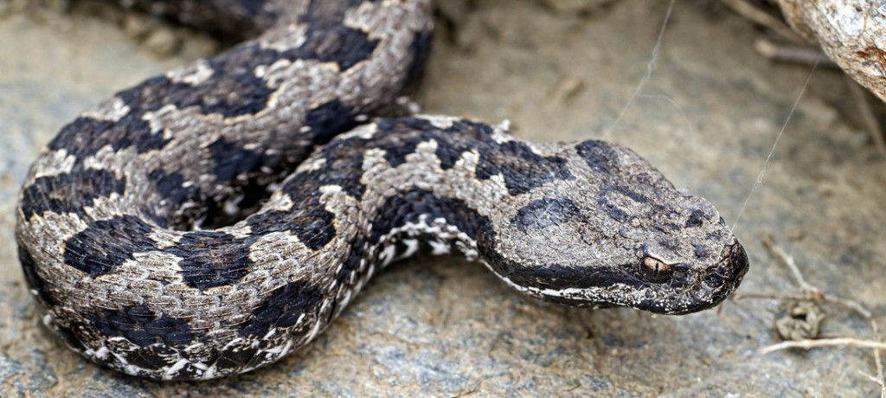
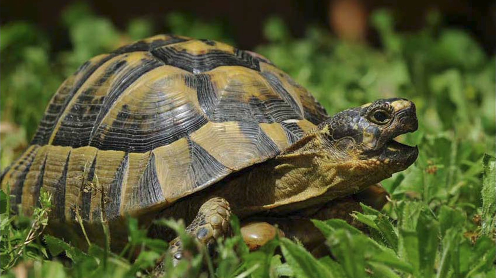
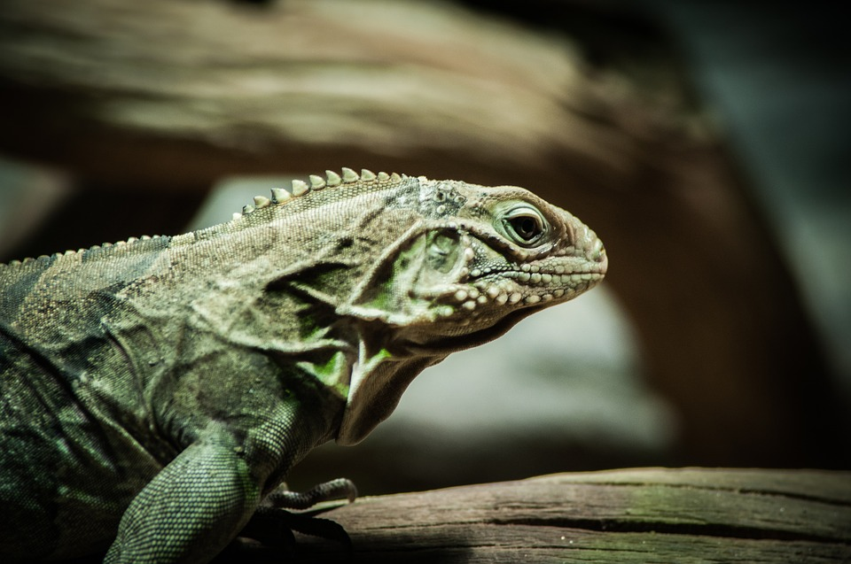

Hjem
Slange

-
Slanger er en gruppe skjellkledde krypdyr som kjennetegnes ved at de mangler synlige lemmer.
-
De er en suksessrik gruppe med over 3 600 arter, og verdensomspennende utbredelse.
-
De varierer sterkt i størrelse fra små former til kjemper på 10-12 meter.
Reptiler

